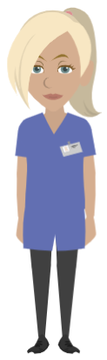

Elena
Meet Northviken · chapter 3 of 8
- Welcome to Northviken
- DEAHL-Connect
- Meet the people
- The rooms
- Timeline and scenes
- How it has been used
- What’s new
- Build on it

Clinical staff · age 37
Physiotherapist and Rehabilitation Team Lead
Leads physiotherapists, an occupational therapist and a part-time psychologist who work on the ward, in clinics, by video and in the community. Her team has measured pain and function on paper for years. Nobody told them the platform did the same.
“DEAHL-Connect does exactly what we already do. No one told us it existed until three weeks after it went live.”
- Sees the whole care pathway
- Her team knows patient-reported measures, and was not asked
- Represents rehabilitation and the other allied professions
Usually found in: Home visits and the community.
Scenes
- Scene N: Elena's discoveryThe platform has the measures her team keeps on paper. She finds the manual, but has no access.